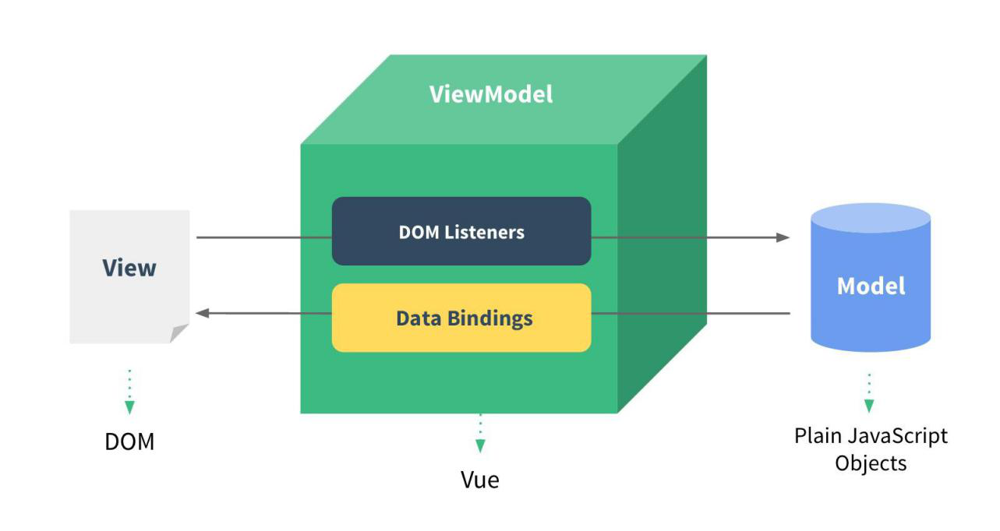

1.1. Vue 的基本认识
1.1.1. 官网
1）英文官网: https://vuejs.org/
2）中文官网: https://cn.vuejs.org/
1.1.2. 介绍描述
1）渐进式 JavaScript 框架
2）作者: 尤雨溪(一位华裔前 Google 工程师)
3）作用: 动态构建用户界面
1.1.3. Vue 的特点
1）遵循 MVVM 模式
2）编码简洁, 体积小, 运行效率高, 适合移动/PC 端开发
3）它本身只关注 UI, 可以轻松引入 vue 插件或其它第三方库开发项目
1.1.4. 与其它前端 JS 框架的关联
1）借鉴 angular 的模板和数据绑定技术
2）借鉴 react 的组件化和虚拟 DOM 技术
1.1.5. Vue 扩展插件
1）vue-cli: vue 脚手架
2）vue-resource(axios): ajax 请求
3）vue-router: 路由
4）vuex: 状态管理
5）vue-lazyload: 图片懒加载
6）vue-scroller: 页面滑动相关
7）mint-ui: 基于 vue 的 UI 组件库(移动端)
8）element-ui: 基于 vue 的 UI 组件库(PC 端)
9）它本身只关注 UI, 可以轻松引入 vue 插件或其它第三方库开发项目
1.2. Vue 的基本使用
1.2.1. 编码
<div id="app">
<input type="text" v-model="username">
<p>Hello, {{username}}</p>
</div>
<script type="text/javascript" src="../js/vue.js"></script>
<script type="text/javascript">
new Vue({
el: '#app',
data: {
username: 'vue'
}
})
</script>
1.2.2. 使用 vue 开发者工具调试
安装vue-devtools.crx（v_4.1.3）
1.2.3. 理解 Vue 的 MVVM

1.3. 模板语法
1.3.1. 模板的理解
1）动态的 html 页面
2）包含了一些 JS 语法代码
a.双大括号表达式
b.指令(以 v-开头的自定义标签属性)
1.3.2. 双大括号表达式
1）语法: {{exp}}
2）功能: 向页面输出数据
3）可以调用对象的方法
1.3.3. 指令一: 强制数据绑定
1）功能: 指定变化的属性值
2）完整写法:
v-bind:xxx='yyy' //yyy 会作为表达式解析执行
3）简洁写法:
:xxx='yyy'
1.3.4. 指令二: 绑定事件监听
1）功能: 绑定指定事件名的回调函数
2）完整写法:
v-on:keyup='xxx'
v-on:keyup='xxx(参数)' v-on:keyup.enter='xxx'
3）简洁写法:
@keyup='xxx' @keyup.enter='xxx'
1.4. 计算属性和监视
1.4.1. 计算属性
1）在 computed 属性对象中定义计算属性的方法
2）在页面中使用{{方法名}}来显示计算的结果
1.4.2. 监视属性
1）通过通过 vm 对象的$watch()或 watch 配置来监视指定的属性
2）当属性变化时, 回调函数自动调用, 在函数内部进行计算
1.4.3. 计算属性高级
1）通过 getter/setter 实现对属性数据的显示和监视
2）计算属性存在缓存, 多次读取只执行一次 getter 计算
1.5. class 与 style 绑定
1.5.1. 理解
1）在应用界面中, 某个(些)元素的样式是变化的
2）class/style 绑定就是专门用来实现动态样式效果的技术
1.5.2. class 绑定
1）:class='xxx'
2）表达式是字符串: 'classA'
3）表达式是对象: {classA:isA, classB: isB}
4）表达式是数组: ['classA', 'classB']
1.5.3. style 绑定
1）:style="{ color: activeColor, fontSize: fontSize + 'px' }"
2）其中 activeColor/fontSize 是 data 属性
1.6. 条件渲染
1.6.1. 条件渲染指令
1）v-if 与 v-else
2）v-show
1.6.2. 比较 v-if 与 v-show
3）如果需要频繁切换 v-show 较好
4）当条件不成立时, v-if 的所有子节点不会解析
1.7. 列表渲染
1.7.1. 列表显示指令
数组: v-for / index
对象: v-for / key
1.7.2. 列表的更新显示
删除 item
替换 item
1.7.3. 列表的高级处理
列表过滤
列表排序
1.8. 事件处理
1.8.1. 绑定监听:
1）v-on:xxx="fun"
2）@xxx="fun"
3）@xxx="fun(参数)"
4）默认事件形参: event
5）隐含属性对象: $event
1.8.2. 事件修饰符
1）.prevent : 阻止事件的默认行为 event.preventDefault()
2）.stop : 停止事件冒泡 event.stopPropagation()
1.8.3. 按键修饰符
1）.keycode : 操作的是某个 keycode 值的键
2）.keyName : 操作的某个按键名的键(少部分)
1.9. 表单输入绑定
1.9.1. 使用 v-model 对表单数据自动收集
1）text/textarea
2）checkbox
3）radio
4）select
1.10. Vue 实例生命周期
1.10.1. 生命周期流程图

1.10.2. vue 生命周期分析
1）初始化显示
*beforeCreate()
*created()
*beforeMount()
*mounted()
2）更新状态: this.xxx = value
*beforeUpdate()
*updated()
3）销毁 vue 实例: vm.$destory()
*beforeDestory()
*destoryed()
1.10.3. 常用的生命周期方法
1）created()/mounted(): 发送 ajax 请求, 启动定时器等异步任务
2）beforeDestory(): 做收尾工作, 如: 清除定时器
1.11. 过渡&动画
1.11.1. vue 动画的理解
1）操作 css 的 trasition 或 animation
2）vue 会给目标元素添加/移除特定的 class
3）过渡的相关类名
xxx-enter-active: 指定显示的 transition
xxx-leave-active: 指定隐藏的 transition
xxx-enter/xxx-leave-to: 指定隐藏时的样式

1.11.2. 基本过渡动画的编码
1）在目标元素外包裹
2）定义 class 样式
指定过渡样式: transition
指定隐藏时的样式: opacity/其它
1.12. 过滤器
1.12.1. 理解过滤器
1）功能: 对要显示的数据进行特定格式化后再显示
2）注意: 并没有改变原本的数据, 可是产生新的对应的数据
1.12.2. 定义和使用过滤器
1）定义过滤器
Vue.filter(filterName, function(value[,arg1,arg2,...]){
// 进行一定的数据处理
return newValue
})
2）使用过滤器
<div>{{myData | filterName}}</div>
<div>{{myData | filterName(arg)}}</div>
1.13. 内置指令与自定义指令
1.13.1. 常用内置指令
1）v-text : 更新元素的 textContent
2）v-html : 更新元素的 innerHTML
3）v-if : 如果为 true, 当前标签才会输出到页面
4）v-else: 如果为 false, 当前标签才会输出到页面
5）v-show : 通过控制 display 样式来控制显示/隐藏
6）v-for : 遍历数组/对象
7）v-on : 绑定事件监听, 一般简写为@
8）v-bind : 强制绑定解析表达式, 可以省略 v-bind
9）v-model : 双向数据绑定
10）ref : 指定唯一标识, vue 对象通过$refs 属性访问这个元素对象
11）v-cloak : 防止闪现, 与 css 配合: [v-cloak] { display: none }
1.13.2. 自定义指令
1）注册全局指令
Vue.directive('my-directive', function(el, binding){ el.innerHTML = binding.value.toupperCase()
})
2）注册局部指令
directives : {
'my-directive' : {
bind (el, binding) {
el.innerHTML = binding.value.toupperCase()
}
}
}
3）使用指令
v-my-directive='xxx'1.14. 自定义插件
1.14.1. 说明
1）Vue 插件是一个包含 install 方法的对象
2）通过 install 方法给 Vue 或 Vue 实例添加方法, 定义全局指令等